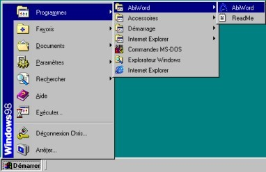
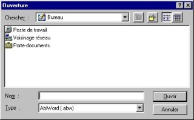
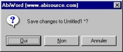

Les bases
Commençons par les choses les plus simples, mais
cependant essentielles et quasiment communes à toute
autre application:
* Ouvrir AbiWord
* Créer un nouveau document
* Enregistrer un document
* Ouvrir un document
* Quitter AbiWord
Ouvrir AbiWord
Si AbiWord a été correctement installé, vous
devriez pouvoir le lancer de deux manières différentes
(Windows)
- La plus simple est de double-cliquer sur l'icone
situé sur le bureau de Windows.

- Sinon, cliquer sur le bouton Démarrer de la
barre des tâches de Windows, puis aller dans le
menu Programmes puis dans le groupe AbiWord et
ensuite cliquer sur l'icone de AbiWord

Créer un nouveau document
A l'ouverture d'AbiWord, un nouveau document est
créé et vous pouvez commencer à taper votre texte sur
la page vierge. Nous verrons ensuite comment mettre en
page ce texte et l'agrémenter.
Pour créer un nouveau document, il y a trois
possibilités:
- Aller dans le menu Fichier puis cliquer sur
"Nouveau" ou
- Aller dans le menu Fenêtre puis cliquer sur
"Nouvelle fenêtre" ou
- Cliquez sur l'icone "Créer un nouveau
document"
 ou ou
- Utiliser le raccourci clavier en appuyant
simultanément sur les touches
"Ctrl" et "N".
Une autre fenêtre AbiWord s'ouvre avec une nouvelle
page vierge: Il est important de saisir cette notion car
AbiWord est une "interface à document
simple" (SDI, Single Document Interface) en
opposition avec les "interfaces à document
multiple" (MDI, Multiple Document
Interface) comme par exemple Microsoft Word où tous vos
nouveaux documents sont sous la même fenêtre Word. Pour
plus de précisions sur ces deux concepts, voir SDI Vs. MDI
Enregistrer un document
Après avoir créé votre document, il faut maintenant
l'enregistrer (sur disquette ou sur le disque dur) afin
de le restituer plus tard. Mais auparavant, il faut bien
distinguer la différence entre "Enregistrer"
et "Enregistrer sous..."
- Si votre document n'a jamais été enregistré,
il faudra lui donner un nom et un emplacement où
stocker ce fichier. Pour cela il faut
"Enregistrer sous..." ; Il y a deux
manières d'enregistrer sous:
- Aller dans le menu Fichier puis cliquer
sur "Enregistrer sous" ou
- Cliquer sur l'icone "Enregistrer
sous..."

Dans les deux cas, une fenêtre apparaît.
Sélectionner l'emplacement où placer le document
(dossier du disque dur ou sur disquette) et taper le
nom du document dans le champ "Nom" puis
enfin cliquer sur le bouton "Enregistrer"

Le chemin et le nom du document apparaissent à la
place de "Untitled1" dans la barre des
titres de AbiWord: votre document est bien
enregistré.
- Afin d'éviter de redonner le nom du document
et son chemin une fois le document
enregistré, on "Enregistre" le
document. Ceci met à jour le même document qui
a été modifié de manière simple et rapide.
Pour "Enregistrer" il existe trois
manières différentes:
- Aller dans le menu Fichier puis cliquer
sur "Enregistrer" ou
- Cliquer sur l'icone "Enregistrer le
document"
 ou ou
- Utiliser le raccourci clavier en appuyant
simultanément sur les touches
"Ctrl" et "S".
Attention: l'enregistrement se fait de
manière quasiment instantanée et le document
précédemment enregistré est irrémédiablement
perdu.
PS:
- Si vous utilisez un même modèle de document que
vous mettez à jour mais dont vous voulez garder
la première version, il faut "Enregistrer
sous..."
- AbiWord permet d'enregistrer des documents sous
plusieurs formats:
*.ABW : c'est le format par défaut d'AbiWord. Il
est équivalent au format XML
*.ZABW : le format ABW compressé qui permet de
réduire la taille du fichier
*.RTF : ce format standard est
"passe-partout" (conserve le texte mis
en forme)
*.TXT : fichier texte qui supprime toute mise en
forme. (la taille du fichier en est réduite)
*.UTF8 : c'est un fichier texte appelé
"texte clair" et à représentation
multi-bits.
*.HTML : format des pages Internet ; standard et
universel.
*.LATEX : fichier au format LaTeX.
Ouvrir un document
Pour ouvrir un document après l'avoir enregistré, il
y a là encore trois possibilités:
- Aller dans le menu Fichier puis cliquer sur
"Ouvrir" ou
- Cliquer sur l'icone "Ouvrir un document
existant."
 ou ou
- Utiliser le raccourci clavier en appuyant
simultanément sur les touches
"Ctrl" et "O".
Dans les trois cas, une fenêtre apparaît.
Sélectionner le type de document à ouvrir et son
emplacement (dossier du disque dur ou sur disquette) et
double cliquer sur le nom du document à ouvrir. Votre
document s'ouvre alors.

Une manière plus simple encore d'ouvrir
des documents récents, est d'aller dans le menu Fichier
puis de cliquer sur l'un des quatre derniers documents
ouverts pour un accès facile. Ces documents sont
classés par ordre chronologique: le plus récent est en
position un et le moins récent en position quatre.
AbiWord permet d'ouvrir des fichiers
provenant de différentes sources:
*.ABW, *.ZABW, *.RTF, *.TXT, *.UTF8
*.DOC : fichiers en provenance de Microsoft Word
(toutes versions)
Quitter AbiWord
Pour quitter AbiWord, ici encore trois manières:
- Aller dans le menu Fichier puis cliquer sur
"Quitter" ou
- Cliquer sur le bouton
 dans la
barre des titres ou dans la
barre des titres ou
- Utiliser le raccourci clavier en appuyant
simultanément sur les touches "Alt" et
"F4".
Dans les trois cas, la fenêtre d'AbiWord se ferme.
Vous pouvez également:
* Réduire AbiWord en cliquant sur le bouton  dans la barre des titres et le mettre
dans la barre des taches afin d'exécuter un
autre logiciel. dans la barre des titres et le mettre
dans la barre des taches afin d'exécuter un
autre logiciel.
* Agrandir ou réduire la fenêtre d'AbiWord en
cliquant sur le bouton  dans
la barre des titres. Un double clique sur la barre
des titres d'AbiWord aura le même effet. dans
la barre des titres. Un double clique sur la barre
des titres d'AbiWord aura le même effet.
PS:
- Si vous tenter de quitter AbiWord alors qu'un
document est ouvert mais non sauvegardé, la
fenêtre ci-dessous apparaît:

Cliquer alors sur le bouton Oui pour
sauvegarder le document, sur le bouton Non pour
quitter sans sauvegarder le document ou sur le bouton
Annuler pour ne pas fermer AbiWord.
- Si plusieurs documents sont ouverts en même
temps, aller dans le menu Fichier puis cliquer
sur "Quitter" tout en appuyant sur la
touche "MAJ" pour fermer toutes les
fenêtres à la fois. La fenêtre ci-dessous apparaît vous demandant si vous voulez oui
ou non fermer toutes les fenêtres.

|